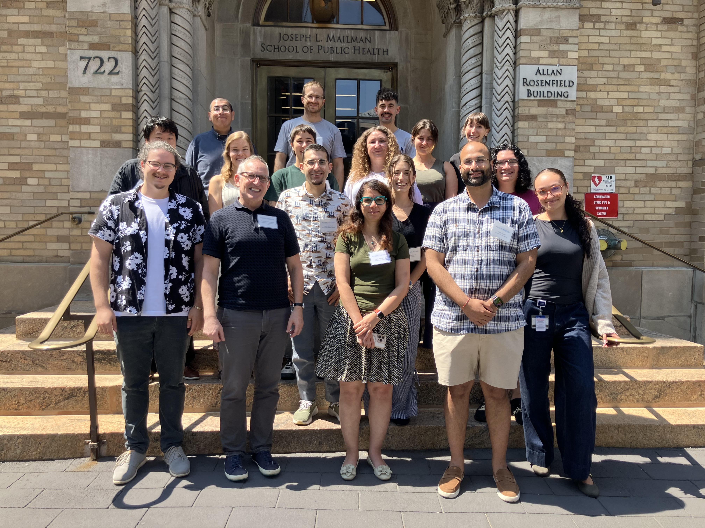
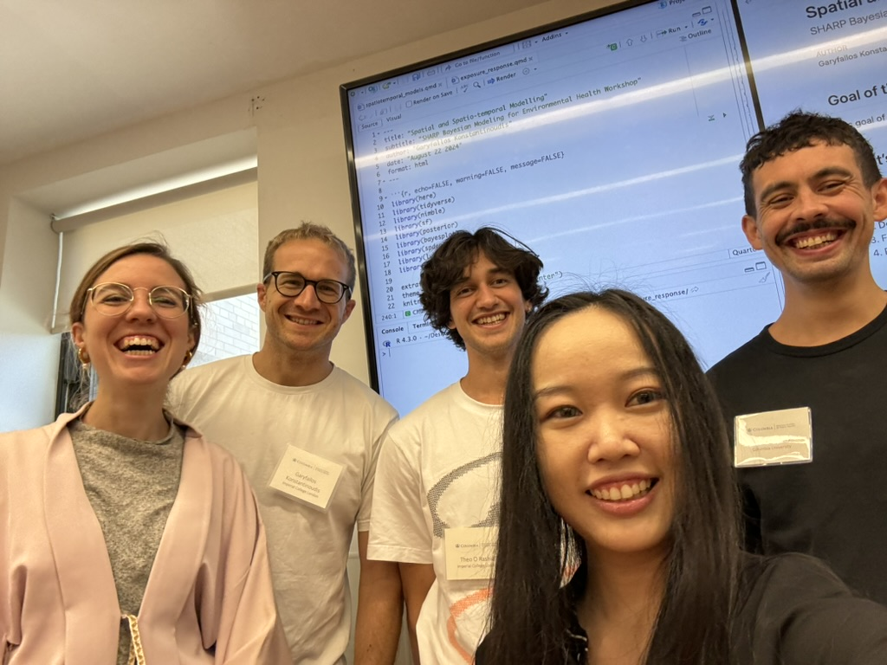

SHARP Bayesian Modeling for Environmental Health Workshop
- Overview
- Unfiltered shareable feedback from 2025 edition
- Photos of previous 2025 edition
- Unfiltered shareable feedback from 2024 edition
- Photos of previous 2024 edition
- Unfiltered shareable feedback from 2023 edition
- Photos of previous 2023 edition
Overview

The Bayesian Modeling for Environmental Health Workshop is a two-day intensive course of seminars and hands-on analytical sessions to provide an approachable and practical overview of concepts, techniques, and data analysis methods used in Bayesian modeling with applications in Environmental Health.
Official SHARP Bayesian Modeling for Environmental Health Workshop
website link.
Course 2025 GitHub link.
Course 2024 GitHub link.
Course 2023 GitHub link.
Unfiltered shareable feedback from 2025 edition
"Overall it was a very solid workshop, and I feel much more confident about transitioning to a bayesian workflow and attempting to answer complex environmental questions. The instructing team did a very good job of explaining complex concepts in simple digestible ways."
"Challenging material, with expert instructors who seemed to know the field extremely well. I'm still a frequentist but now more open to Bayesian approaches."
"The Bayesian Modeling Workshop is a very good introductions for spatio-temporal modelling in Public Health. Begin with de principal fundaments in bayesian statistics and to finish with the most recent models. I recommend this course for any person interest to learn about statistical methods with spatial and temporal data.
Brilliant instructors and systematic approach to a crash course in fairly complex models. Well illustrated with reproducible examples."
"This was a great course with wonderful instructors‚ true professionals who are not only highly knowledgeable but also excellent teachers. The course was very well-structured, covering a wide range of material, starting from the basics and progressing to more complex cases. It was a valuable experience from which I learned a great deal."
"The workshop substantially improved my understanding of using bayesian models for environmental health in just two days given the real-world applicability of the workshop materials. The instructing team were very passionate and knowledgable about the material."
"Overall, the workshop was good, and the instructing team was very experienced. The only limitation was the short time available to absorb such a large amount of information during the two-day training."
Photos of previous 2025 edition

Unfiltered shareable feedback from 2024 edition
"Well-paced, clearly-explained lectures by instructors."
"A thorough and highly applicable introduction to Bayesian modeling."
"Overall, I learned a lot. But I think it was because I had some background in Bayesian and spatial stat, and this workshop helped me to get response for the questions. Otherwise, it could be very confusing. Thanks."
"This course was an exercise in Bayesian praxis. It provided tools to implement theories I had only read about but couldn't figure out how to implement with code."
"The instructors were very knowledgable on the topic and packed a lot into two days. They were very open to questions and diving deeper on topics when students asked."
"This was a compelling workshop taught by people who know their material. Thorough without getting bogged down in the weeds, and practical examples are provided with pre-written scripts to follow."
Photos of previous 2024 edition


Unfiltered shareable feedback from 2023 edition
"Wonderful course reviewing Bayesian modeling from basic concept to cutting-edge."
"The workshop provided a helpful, programming-centric introduction to Bayesian Modeling in an environmental health context."
"This is an efficient, in-depth course with lecture/lab pairs on topics including Bayesian workflows, temporal models, spatial models, and and non-parametric models. The course gives hands-on practice with the tools used for these analyses, with a focus on NIMBLE, but opportunity to work with INLA and ensemble models."
"It was a very interesting and fascinating course! I would recommend everybody to take the course. The only tip I would give is that you familiarize yourself with Bayesian Statistics beforehand."
"I was highly satisfied with the overall workshop structure and content. Learning Bayesian modeling from the basics to its applications brought me a lot of joy."
"This course was a great overview of how Bayesian models can be used within the environmental health/ public health arenas. User friendly with very knowledgeable instructors that made me excited to incorporate Bayesian models into my research!"
"The Bayesian team was really nice and answered several of our questions and concerns."
"Really wonderful practical introduction! I feel like I am ready to test out some of these methods in my own work."
"The workshop was a meticulously prepared, and every detail was thoughtfully addressed. It was an inspiring experience to have the opportunity to learn from world-leading experts in the field."
Photos of previous 2023 edition

Photos below by April Renae.